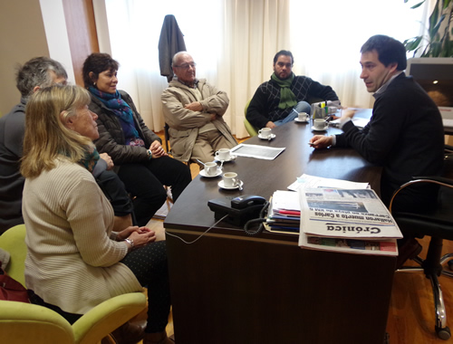

Real Chubut - Agencia de Noticias


LUQUE SE REUNIÓ CON REFERENTES DEL EX INEF

La concreción del edificio propio está cerca y el viceintendente está siguiendo las gestiones para agilizar la escritura que certifique el traspaso de tierras de la Provincia al Instituto, para que finalmente se puedan bajar los fondos y comenzar la tan ansiada construcción del Instituto de Formación Docente Nº 810
El viceintendente Juan Pablo Luque recibió en su despacho del Concejo Deliberante a referentes del Instituto de Formación Docente, ex Instituto Nacional de Educación Física (INEF), para dialogar respecto al estado de situación del trámite de la escritura para que el Gobierno Provincial ceda la titularidad del terreno al Instituto. Esto ya está en proceso y es el trámite necesario y final para que se puedan bajar fondos y se construya el edificio propio.
El presidente del Concejo Deliberante valoró “el esfuerzo que durante tantos años han hecho los directivos para mantener el nivel de enseñanza pese a las dificultades” y bregó por una pronta resolución para la obra: “vamos a insistir al gobierno provincial para que este edificio se construya cuanto antes, porque es una necesidad muy grande teniendo en cuenta la gran cantidad de alumnos de toda la región que estudian educación física en nuestra ciudad”. Al respecto, advirtió que, “hablé con el ministro y está el compromiso para hacer la obra. Va a ser el primer instituto de la provincia y el más austral del mundo en su propio edificio”.
En el despacho estuvieron Graciela Herrera (directora), Alicia Gonzalo (exdirectora), Jorge Milathianakis (primer director), José Mateos (vicedirector) y Elio Gimenez (secretario académico).
“El viceintendente nos está acompañando en las gestiones y vamos avanzando en la definición. Hemos recibido de parte del Gobierno Provincial una notificación del cuadro de necesidades, que se definió en función del plano, y la confirmación de que el terreno es para el Instituto de Educación Física, que se está escriturando de esa manera”, explicó Graciela Herrera.
Por su parte, el primer director del establecimiento, Jorge Milathianakis, recordó que “desde aquellos años estamos bregando para tener una sede propia, que por distintas circunstancias se fue dilatando y ya van 33 años. Ahora da la impresión de que estamos cerca”.
Milathianakis comparó la situación actual del establecimiento con el edificio que figura en el proyecto: “El edificio nuevo difiere completamente con el actual, en donde los alumnos están prácticamente hacinados, el espacio es muy chico, ni siquiera tiene la estructura de un colegio porque era una gamela”. Para graficar más esta realidad, la Directora agregó que “actualmente tenemos 7 anexos, porque en la sede actual hay sólo tres aulas y contamos con 727 alumnos divididos en distintos turnos, mientras que en el proyecto del nuevo edificio está previsto que todo funcione ahí”.